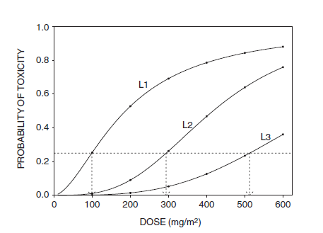

Goals:
- Determine a safe dose for further clinical studied
- Study pharmacokinetics of the drug
Goals:
We can ordinarily assume that the probability of a dose-limiting adverse event increases monotonically with dose
In that circumstances, the Maximum Tolerated Dose (MTD) is the dose associated with the specified probability of a dose-limiting toxicity (DLT)
Health Effects Discussion and Determination of Final PEL, OSHA
Health Effects Discussion and Determination of Final PEL, OSHA

One popular model is the logistic model, which has only two parameters, an intercept and a slope

| Rule Based Design | Model Based Designs |
|---|---|
| Easy to describe | Difficult to describe |
| Easy to implement | Require statistical support |
| Possibly inefficient | May be more efficient |
They incorporate uncertainty regarding patient outcome by using Bayesian probability models:
Patients with renal cell carcinoma (RCC) that was progressive after previous treatment with interferon were eligible.
Toxicity was defined as grade 3 or 4 diarrhea, mucositis, or hematologic toxicity.
A total of 36 patients were treated in cohorts of size 3, with the first cohort given 200mg/m2 of GEM.
The probability of toxicity \(P_{TOX}\) depends on the dose given to the patient \[ P_{TOX}(100) < P_{TOX}(200) < \ldots < P_{TOX}(600) \]
underlying assumption: a larger dose necessarily implies a greater risk of toxicity, e.g \(P_{TOX}(dose)\) must increase with dose

Three possible dose-toxicity probability curves described by the logistic regression model
A model based method requires specifying a fixed \(P_{TOX}\) value as target for the dose-finding problem. In the RCC trial, the target is 0.25:
The Bayesian regression model has linear term \[ \eta(x,\theta) = \mu +\beta x, \qquad \mu\in R, \beta>0 \] which is linked to the probability toxicity \(\pi(d,\theta)\) by a suitable link function \[ \pi(d,\theta) = g^{-1}\{\eta (x_j, \theta)\}, \qquad g(\pi) = \log\frac{\pi}{1-\pi} \]
To determine the prior on \((\mu, \beta)\) elicited prior means \(\pi(d_1,\theta)\) and \(\pi(d_2,\theta)\) at two distinct doses \(d_1\) and \(d_2\) are used to determine priors on \((\mu, \beta)\).
A simpler approach can be adopted:
\[ \pi(d_1,\theta) = g^{-1}\{\eta (x_j, \theta)\} = g^{-1}(\mu + 0.65\beta) = 0.25 \]
\[ \pi(d_2,\theta) = g^{-1}\{\eta (x_j, \theta)\} = g^{-1}(\mu + 1.57\beta) = 0.75 \]
given doses \(d_1 < d_2 < \ldots < d_k\), \(x_j\) is the standardized dose \(x_j = \log(d_j)-\frac{\log(d_1)+\ldots +\log(d_k)}{k}\). Thus \(d_1=500, x_1 = 0.65\) and \(d_2 = 500, x_2 = 1.57\)
Solving (1) and (2): \[ E(\mu)=-0.1313, \qquad E(\beta)=2.3980 \] We chose \(\sigma_\mu = \sigma_\beta = 2\)
Patients with renal cell carcinoma (RCC) that was progressive after previous treatment with interferon were eligible.
Toxicity was defined as grade 3 or 4 diarrhea, mucositis, or hematologic toxicity.
A total of 36 patients were treated in cohorts of size 3, with the first cohort given 200mg/m2 of GEM.
\[ P(d, \alpha) = \rm{probability\ of \ a \ toxicity\ at\ dose\ d} \]
The following working models were suggested in (Biometrics 1990)
\(\alpha\) is the parameter that is going to be updated during the trial
Given the data for doses \(x_i\) and outcomes \(y_i\), the likelihood is
\[ f(x\vert\theta) = \prod_i P(x_i,\theta)^{y_i}(1-P(x_i,\theta))^{1-y_i} \]
and the posterior is
\[ \pi(\theta\vert x) = \frac{f(x\vert\theta)\pi(\theta)}{\int_0^\infty f(x\vert\theta)\pi(\theta)d\theta} \] computed by numerical integration or MCMC methods
| doses | \(d_1=100\) | \(d_2=200\) | \(d_3=300\) | \(d_4=400\) | \(d_5=500\) | \(d_6=600\) |
| probabilities | 0.15 | 0.25 | 0.40 | 0.60 | 0.75 | 0.85 |
The skeleton is fixed throughout the trial and dictates the shape of the curve
Under either model:
the likelihood for n patients is
\[ \prod_{i=1}^n \pi(d_i,\theta)^{Y_i}\times (1-\pi(d_i,\theta ))^{(1-Y_i)} \]
The posterior of \(\theta\) and each posterior mean \(E(\pi(d_j, \theta)|data)\) may be computed using either numerical integration or Markov chain Monte Carlo methods.
The additional rule that stops the trial if the lowest dose is excessively toxic is given formally by \[ Prob\{\pi(d_1, \theta) > \pi^*|data\} > p_U \] where \(p^*\) is the fixed target and \(p_U\) is a fixed upper probability cut-off, usually in the range 0.95 to 0.99.
To re-compile the slides:
library(rmarkdown)
render("index.Rmd")